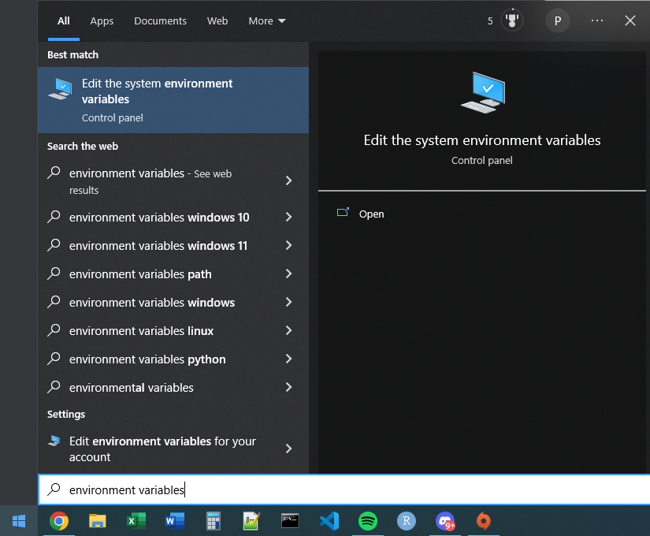
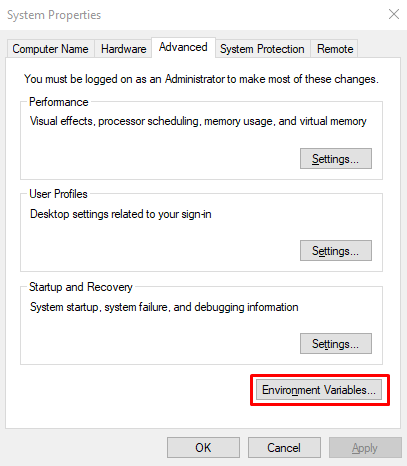
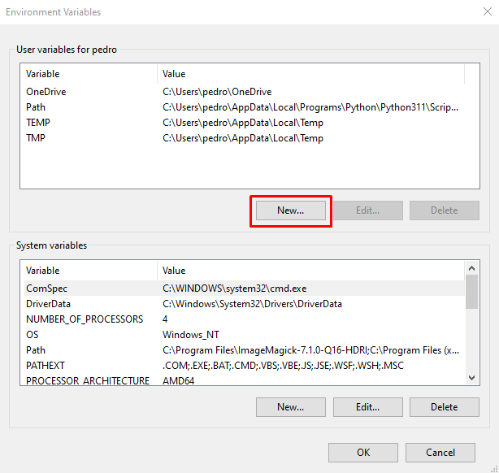
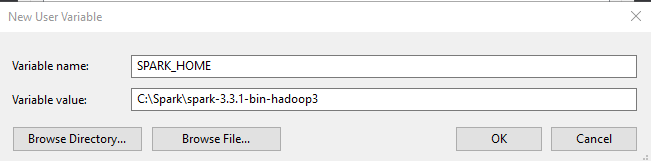
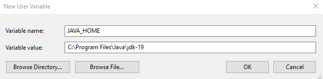

Appendix B — How to install Spark and pyspark
In order to build and run any Spark application through pyspark, you have to install Apache Spark in your computer. Apache Spark is available to all three major operating systems in the market today (macOS, Windows and Linux).
The process of installation is kind of similar in all three OS’s. But some steps work differently in each OS. Currently, I (the author of this book) do not have access to a macOS machine, and because of that, I will not describe the installation process of Spark on this platform here. If you have access to a macOS machine, and are willing to describe this installation process, I would be happy to review a PR with such content.
B.1 What are the steps?
In short, the next steps for installing Spark are:
- Install Java;
- Install Python;
- Install
pyspark; - Download and extract Apache Spark;
- Set a few environment variables;
The next sections describes these steps for each operating system.
B.2 On Windows
B.2.1 Install Java SDK
Apache Spark is written in Scala, which is a fairly modern programming language that have powerful interoperability with the Java programming language. Because of this characteristic, some of the functionalities of Spark require you to have Java SDK (Software Development Kit) installed in your machine.
In other words, you must have Java SDK installed to use Spark. If you do not have Java SDK, Spark will likely fail when you try to start it. However, since Java is a very popular tecnology across the world, is possible that you already have it installed in your machine. To check if Java is already installed, you can run the following command in your OS terminal:
#| eval: false
Terminal$ java -versionIf the above command outputs something similar to the text exposed below, than, you already have Java installed in your machine, and you can proceed to the next step.
java version "19.0.1" 2022-10-18
Java(TM) SE Runtime Environment (build 19.0.1+10-21)
Java HotSpot(TM) 64-Bit Server VM (build 19.0.1+10-21, mixed mode, sharing)But, if something different comes up in your terminal, than, is likely that you do not have Java installed. To fix this, download Java from the official website1, and install it.
B.2.2 Install Python
You can easily install Python on Windows, by downloading the installer available at the official website of the language2, and executing it.
B.2.3 Install pyspark
Installing the pyspark python package is pretty straightforward. Just open a terminal (if you need help to open the terminal check Appendix A), and use the pip command to do it:
#| eval: false
Terminal$ pip install pysparkIf you try to run the above command (inside a terminal of any OS), and a message like pip: command not found appears, this means that you do not have the pip tool installed on your machine. Hence, if you face this kind of message, you need to install pip before you even install pyspark.
The pip tool is automatically installed with Python on Windows. So, if you face this message (pip: command not found), then, is very likely that you do not have Python correctly installed on your machine. Or maybe, Python is not installed at all in any shape or size in your system. So, you should comeback to previous section, and re install it.
B.2.4 Download and extract the files of Apache Spark
First, you need to download Apache Spark from the official website of the project3. Currently, the Apache Spark does not offers installers or package programs to install the software for you.
We usually install external software on Windows by using installers (i.e. executable files - .exe) that perform all the necessary steps to install the software in your machine. However, currently, the Apache Spark project does not offers such installers. This means that you have to install it yourself.
When you download Apache Spark from the official website, you will get all files of the program compacted inside a TAR file (.tgz), which is similar to a ZIP file (.zip). After you downloaded Spark to your machine, you need to extract all files from the TAR file (.tgz) to a specific location of your computer. It can be anywhere, just choose a place. As an example, I will extract the files to a folder called Spark directly at my hard disk C:/.
To extract these files, you can use very popular UI tools like 7zip4 or WinRAR5. However, if you use a modern version of Windows, there is a tar command line tool available at the terminal that you can use to do this process in a programatic fashion. As an example, I can extract and move all files of Spark with these commands:
#| eval: false
Terminal$ tar -x -f spark-3.3.1-bin-hadoop3.tgz
Terminal$ mv spark-3.3.1-bin-hadoop3 C:/Spark/spark-3.3.1-bin-hadoop3B.2.5 Set environment variables
Apache Spark will always look for two specific environment variables in your system: SPARK_HOME and JAVA_HOME. This means that you must have these two environment variables defined and correctly configured in your machine. To configure an environment variable on Windows, I recommend you to use the menu that you can find by searching for “environment variables” in the Windows search box. At Figure B.1 you can see the path to this menu on Windows:



During the process of scheduling and running your Spark application, Spark will execute a set of scripts located at the home directory of Spark itself. Spark does this by looking for a environment variable called SPARK_HOME in your system. If you do not have this variable configured, Spark will not be able to locate its home directory, and as a consequence, it throws an runtime error.
In other words, you need to set a variable with name SPARK_HOME in your system. Its value should be the path to the home (or “root”) directory where you installed (or unzipped) the Spark files. In my case I unzipped the files into a folder called C:/Spark/spark-3.3.1-bin-hadoop3, and that is the folder that I going to use in SPARK_HOME, as you can see at Figure B.2:

SPARK_HOME environment variableNow, a lot Spark functionality is closely related to Java SDK, and to find it, Spark will look for a environment variable called JAVA_HOME. On my machine, I have Java SDK installed at the folder C:\Program Files\Java\jdk-19. This might be not your case, and you may find the “jdk” folder for Java at a different location of your computer. Just find where it is, and use this path while setting this JAVA_HOME variable, like I did at Figure B.3:

JAVA_HOME environment variableWith these two environment variables setted, you should be able to start and use Spark already. Just open a brand new terminal, and type the spark command. An interactive Spark Session will initiate after this command, and give you a command prompt where you can start coding the Spark application you want to execute.
B.3 On Linux
B.3.1 Install pyspark
In Linux systems, installing pip is very easy, because you can use the built-in package manager to do this for you. In Debian like distros (e.g. Ubuntu), you use the apt tool, and, in Arch-Linux like distros (e.g. Arch Linux, Manjaro) you would use the pacman tool. Both possibilities are exposed below:
{terminal, eval = FALSE} # If you are in a Debian like distro of Linux # and need to install `pip`, use this command: Terminal$ sudo apt install python3-pip # If you are in a Arch-Linux like distro of Linux # and need to install `pip`, use this command: Terminal$ pacman -S python-pip